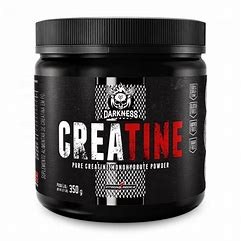

.jpg)
Os primeiros treinamentos são os mais dificeis, pois uma rotina tem que ser mantida ao longo do tempo. Os gatilhos para alguém quebrar essa linha tenue de tempo são vários, mas com foco e empenho, pessoas te apoiando, boa alimentação e rotina de sono, não só os gatilhos o impede, seu próprio corpo lutará contra você e com tempo o corpo irá reagir com muita eficiência e eficácia se a deticação for mantida.
Manter uma rotina de sono e dormir o equivalente para acordar bem descançado no outro dia.
A alimentação é algo que é subestimado por muitas pessoas, porém todavia, ela é um passo crucial para um bom treino e eliminação de gordura localizada.
.jpg)
Treino bem executado sem quebrar a rotina e sempre chegando a falha, mas sempre tomando as devidas precauções de segurança e limite próprio, não levante pesos execivos que vai debilitar as suas repetições.
Não faça treinos execivos, deixe o musculo se regenerar, pois treinos execivos podem diminuir o volume do musculo ou em contusões.
O indispensavel para começar a treinar é a Creatina, pois ela auxilia na força e regeneração do musculo porque mesmo se houver erro na dusagem o suplemento não vai fazer mal ao iniciante.
